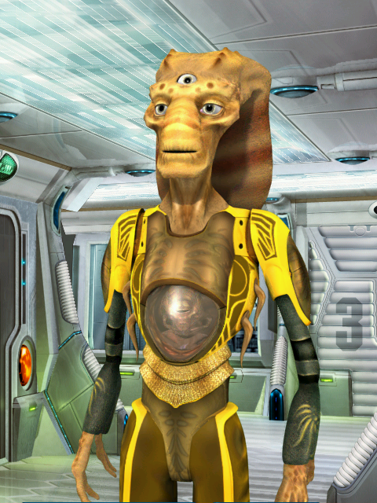

Космические рейнджеры
Фэяне
Фэяне Фэяне - раса гуманоидов-гермафродитов с большими фасеточными глазами. Это малоподвижные, физически слабые существа, большая часть активности которых направлена на мыслительную деятельность. Фэянин может произвольно делить свое сознание и фасеточное зрение на участки, функционирующие самостоятельно, таким образом образовывая произвольное количество автономно и независимо действующих областей сознания, отдельно воспринимающих мир через свою часть фасеточного зрения.
Фэянскую расу отличает высочайший уровень естественных умственных способностей. Это философы, исследователи и новаторы, культивирующие собственную культуру и собственное оригинальное видение мироздания. Фэяне боготворят гаальцев и снисходительно относятся к своим меньшим братьям по разуму – людям. Малоков фэяне скорей воспринимают как животных, нежели как разумных существ. Пеленгских шпионов охочих до фэянских технологий, фэяне постоянно отлавливают и наказывают.
Основная роль и непосредственная ответственность фэян в Содружестве - исследовательские проекты и направления. Именно фэянские институты провели и завершили в 2882 г. фундаментальные исследования черных дыр, в результате которых были созданы технологии нуль-перехода и боевые прототипы современного прожектора вихря.
Гаальцы
Гаальцы Гаальцы (дети Гаала) – гуманоиды, тысячелетиями развивающие свою физиологическую форму путем генетических модификаций эмбрионов. Первоначальная естественная форма гаальской расы уже неизвестна.
История гаальской расы берет свое начало в глубокой древности, когда гаальцы были единственными разумными существами из всех рас Содружества. Гаальцы - это меценаты и мотиваторы космоса, культивирующие конструктивизм и гуманизм во всех отношениях. Они используют военный флот лишь для нейтрализации назревающих конфликтов и обеспечения стабильности в Содружестве.
Ко всем без исключения гаальцы относятся одинаково, причем одинаково хорошо. Подразумевается, что как бы плохо ни вели себя народы, потенциально они являются носителями положительных тенденций и имеют, как минимум, три права: на жизнь, на определение добродетели и на мотивацию. В результате гаальцы относятся ко всем как к друзьям и партнерам, даже тогда, когда объективно последние таковыми не являются.
Малоки
Малоки - крупные, мощного телосложения гуманоиды. Для них характерна огромная физическая сила, выносливость, высокая сопротивляемость природным факторам, слабоактивная мыслительная деятельность, почти абсолютная всеядность. Такие характеристики позволяют малокам обеспечивать высокую жизненность и репродуктивность в самых неблагоприятных средах.
Малоки - приверженцы культа силы. Сила во всем и вся, сила физическая и сила характера, сила слова и дела, сила оружия и сила власти - вот основные и универсальные ценности малокской цивилизации. Малоки не любят хилых фэян и заумных гаальцев.
Малоки являются самой технологически отсталой цивилизацией Содружества. Это объясняется, прежде всего, их традиционным недоверием к интеллектуальным ценностям, слишком часто приводящим к вольнодумию, которое понимается малоками как основная угроза стабильности. Другая причина, тормозящая технологический прогресс - огромные затраты на содержание армии и поддержка экстенсивной колониальной экономики. Однако отставание в сфере дипломатии и технологии с лихвой компенсируется другими приоритетными направлениями - огромным вооруженным флотом и мощнейшей экстенсивной колонизацией.
Люди
Люди - гуманоиды среднего роста, с тонким хрупким скелетом, питаются органической белковой пищей. Разнородность климатических режимов на большинстве заселенных планет (в особенности Солнечной системы) отражаются в сильных внешних различиях: цвете кожи, чертах лица и т.д.
Люди, прежде всего психологи, политики и дипломаты. Риторика, психологическая игра, политические технологии - главные сильные позиции людей. Люди и фэяне братья навек, а вот малокскую цивилизацию люди всегда недолюбливали и опасались. Отношение к пеленгам и гаальцам нормальное.
В плане технологического развития люди крепкие середнячки. Все главные завоевания человечества лежат в экономической сфере. Появился общий галактический рынок, где стало возможным торговать разрешенными в данном месте товарами (создать общий список разрешенных товаров до сих пор не удалось), и, конечно же, главная победа - введение общей денежной единицы - галактического кредита! К другим успехам относятся введение общей хронологической системы на основе человеческой и организация свободного перемещения граждан.